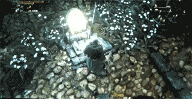
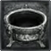
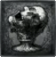
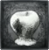
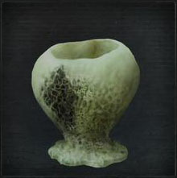
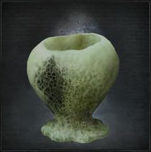
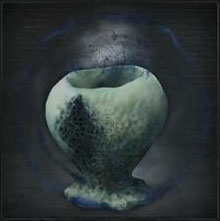
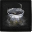
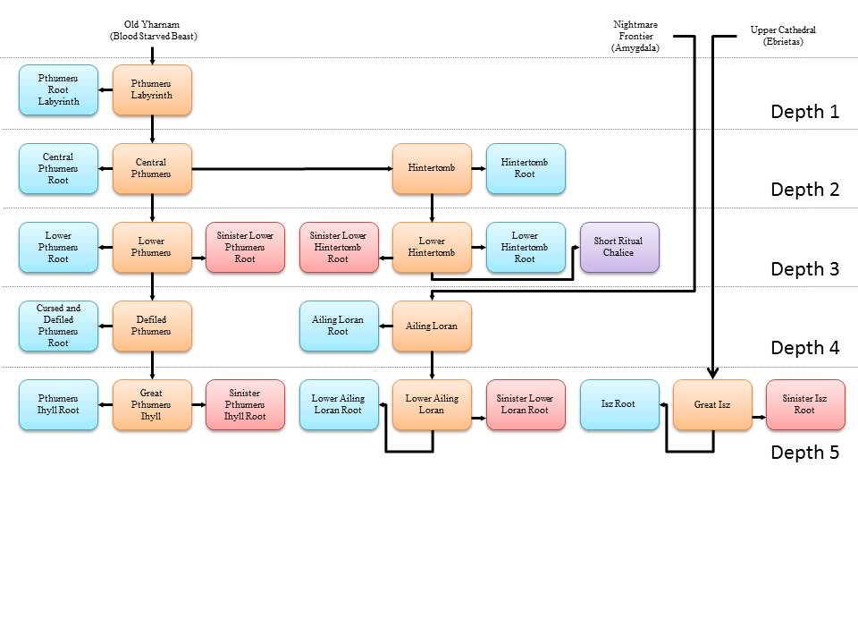

Chalice Dungeon |
|
|---|---|
|  | |
| Lamps per Dungeon | Varies |
| Bosses per Dungeon | 3-4 |
| Drops | Blood Gems, Weapons |
| Multiplayer (MP)? | Co-op & PvP |
| PS+ Required? | No; Yes for MP |
| Creation Location | Hunter's Dream |
| In Yharnam's underground, runs a wide and long expanse of ruins. Frighteningly old,it is believed to have been made by something not human, perhaps a grave, even maybe a resting place. Moreover, it is said that this ruins changes its form depending on its passersby. | |
Chalice Dungeons in Bloodborne are vast underground ruins deep beneath the city of Yharnam. They offer a chance to experience Bloodborne's sense of exploration, danger and reward in all new ways. Hunters can access these multi-leveled dungeons by performing a Chalice Ritual.
Root chalice dungeons are procedurally-generated, whereas other chalice dungeons are fixed in structure. Although the dungeons' layout changes with each ritual performed, each layout is saved and can even be uploaded and shared with friends or the world. Please see the Online page for Co-op and PvP requirements.
Chalice Dungeon Features
- Chalice Dungeons spawn multiple Bosses that the player must defeat in order to clear the Dungeon. It is unclear which bosses the Dungeons will spawn, but see the Chalice Dungeon Bosses page for a list of which can.
- There are special candles that light up blue if you enter a room that you have already visited, helping you not get lost.
- There are Chime Maidens within each Chalice Dungeon that are troublesome if you do not kill them, as they will continually summon more monsters to attack you. The monsters can be identified by the red tint to them, and they will be expunged after killing the Maiden.
- Levers within the Dungeon must be pulled in order to access the lower levels of the dungeon.
- There are Lamps within the Dungeons that act as checkpoints so the player can port back to where they were.
- The dungeon has a very varied architecture, and it's not only vast, but also extensive vertically.
- Strangers are not welcome, so the hallways are ridden with a variety of traps, like giant guillotine blades caked in blood of hunters past, censers - that may hide enemies, treasures or emit poison - or fire spitting statues.
- There are also extensive areas, like a greasy swamp. The liquid seems to be fat forever leaking out of rotten bodies.
- Messengers haunt the Chalice Dungeon too, and there are special areas where many of them gather. They are the proof that the place has been “shared” many times.
- Chalice Rituals must be performed in order to create a Chalice Dungeon, and Chalices determine what type of Chalice Dungeon you will create.
- Chalice dungeons can also be a lucrative way to earn more blood echoes as creatures will frequently drop more ritual materials, some of which will sell for a high amount.
Chalice Dungeon General Information
- Only Root Chalices provide randomly generated dungeons, the others are fixed.
- Chalice Dungeons do NOT scale with NG+.
- The depth of a dungeon represents its difficulty, with 1 being easy and 5 being extremely difficult.
- Areas in chalice dungeons while sometimes are dynamic in enemies and architecture, always have indicators depicting your location on the dungeon floor. A chalice dungeon floor can be divided into four areas. The pre-area, the main area, boss room hallway, and the post-area. Yellow lanterns usually signify the end of an area, and the start of another. ex. pre-area> main area>hallway to the boss room > boss room>post-area
- The pre-area consists of an entry room, a hallway leading to the main area, and sometimes a door leading to an alternate path. The beginning room of the first floor contains a purple lamp, and all subsequent floors begin with elevator rooms with a call lever. The yellow lanterns indicate the gate to the main area, while red lanterns indicate an alternate path. This area sometimes has one or two bonus rooms, indicated by a door on the side of the hallway. There is a chance for a sarcophagus or treasure room, which is where you will find unique loot or chalice materials.
- The main area is located after the first set of yellow lanterns, this is a location that sometimes has sarcophogi, and always has a switch to unlock the hallway to the boss room. The gate to the next hallway is always locked by default, and unlocking it is always necessary to proceed to the next area. The gate starts off with purple lanterns, which means the boss room is locked until the switch is activated. Once the switch is activated, the lanterns of the gate turn blue, indicating that the gate is now unlocked.
- The hallway to the boss room is just that; a passage ending with the boss room. Follow the yellow lanterns and open the heavy double doors to engage the boss. This hallway sometimes contains a path to a bonus room, indicated once again by red lanterns.
- The post-area is where the boss resides. Defeating the boss causes a purple lantern to appear, and eliminates the fog blocking you from the double doors and the door to the elevator room. Note: if you are on the very last floor of a dungeon then there will NOT be an elevator room, the floor will simply end with the boss room. The post-area sometimes contains a bonus room.
- Bonus rooms are areas located in a chalice dungeon floor either before or after the main area. The chance for a bonus room appearing is random for some dungeons. These bonus rooms often have rare ingredients for chalice rituals, contained in normal chests. Sometimes uncanny or lost weapons are found located in sarcophagus shaped chests. The type of chest you might find is just as random as the bonus room appearing.
- Additional items can be added to some Chalice Rituals increasing the difficulty of the dungeon but upping the drop rate of Blood Gems inside. Fetid Offerings gives a damage buff to the enemies inside, Rotted Offering adds enemies to the dungeon and increases the likelihood there will be traps, Cursed reduces your HP by half and makes all Blood Gems that drop Cursed, and Sinister Bell makes it so you can be invaded.
- Pthumeru Chalices drop Radial Blood Gems, Loran Chalices drop Waning Blood Gems, and Isz Chalices drop Triangular Blood Gems.
- You do not need to activate any of the purple lanterns to proceed through the dungeon, but you will not respawn at those points if they are not activated.
- Some dungeons, like Pthumeru Depth 3, have four floors.
- If an enemy is killed with a visceral attack, there is a chance a Bloodsucking Beast will be summoned. When the player leaves the room and returns, this enemy may be found lapping up the blood.
Chalice Dungeon Multiplayer Information
- In order to Co Op a Chalice Dungeon you must have created the Chalice of that Dungeon yourself at least once. You CANNOT join Chalice Dungeons that are using Chalices you have not yet acquired and made.
- You can Co Op with a friend by giving them your Chalice Glyph or by them giving you theirs and entering it in at a Ritual Altar in Hunter's Dream.
- All Chalice Dungeons can be Co Oped, but only some can be PvPed. In order for PvP in a Chalice Dungeon, the player must have created or joined a Dungeon that was made using a Root Chalice or a Sinister Chalice. There is one Sinister Chalice of each type: Pthumeru, Hintertomb, Loran and Isz.
- You can set a chalice dungeon to shared and closed, and only people with the glyph will be able to PvP or Co Op. However they will need to manually move to the location of the host, requiring them to clear the dungeon.
- It is important to remember that only the host's progress is saved, so in order to clear the entire dungeon you will have to take turns hosting and being summoned. Summoned players vanish after each boss is defeated.
- Once you have defeated the last boss of the Pthumeru Chalice, the Short Ritual Root Chalice will be purchasable from the insight messenger bath in the Hunter's Dream. This special chalice can be used at the Makeshift Altar in Hunter's Dream to quick-search for Chalice Dungeons to join as the guest, host or invader. You can use the Short Ritual Root Chalice Co-Op search feature with a password (to help connect to the desired target) to be summoned in their dungeon at ANY layer they are in. Whatever chalice they are in gets placed at the Makeshift Altar, granting you a FREE dungeon to go through from the start if you wish. You can remove the chalice that is placed in the Makeshift Altar and begin your Co-Op search anew for any other people you may want to help. In addition Co-Op through the SRRC method has a chance of placing you in a completely random room of the dungeon. In order for this to work the Chalice Dungeon must be SHARED AND OPEN (not Closed)
- If one left the Chalice for too long (not playing the host character for more than a week) and no one possess your shared glyph, the Chalice will be deleted from the server, rendering the Chalice unavailable for co-op, if one logged out inside a chalice deleted from the server, the character's save data will be CORRUPTED due to the absence of glyph data.
- It is possible to duplicate your own Chalice Dungeon by copy and paste the glyph you generated at "Search by Chalice Glyph", this allows you to farm the items or even create your own server.
Chalices in Bloodborne are Items the player uses to create versions of Chalice Dungeons. The player will add the Materials required to the Chalice in the Hunter's Dream's Ritual Altars to create that Dungeon. Dungeon Depth indicates difficulty. The greater the Depth the greater the difficulty. Additional Rites can be used on creation, altering the dungeon's content. Root Chalices will create Dungeons with varying loot, bosses and layout where as non-Root Chalices will have the same parameters for all players.
Chalices
Pthumeru Chalices
Hintertomb Chalices
Loran Chalices
Isz Chalices
| Name, Icon, Depth, Area |
Materials Needed |
Offerings |
Location |
|---|---|---|---|
|  Great Isz Chalice Depth: 5 Area: Isz |
Ritual Blood (5) x9 Pearl Slug x3 Arcane Haze x25 Blood Echoes x11,500 |
None |
Kill Ebrietas, Daughter of the Cosmos. |
|  Isz Root Chalice Depth: 5 Area: Isz |
Ritual Blood (5) x13 Tomb Mold (5) x5 Pearl Slug x3 Red Jelly x1 Blood Echoes x11,500 |
Fetid: Sage's Hair x6 Rotted: Yellow Backbone x6 Curse: Bastard of Loran x3 |
Kill Ebrietas, Daughter of the Cosmos in Great Isz Chalice (Layer 3.) |
|  Sinister Isz Root Chalice Depth: 5 Area: Isz |
Ritual Blood (5) x13 Tomb Mold (5) x5 Pearl Slug x3 Red Jelly x1 Blood Echoes x11,500 |
Sinister Bell: Arcane Haze x32 |
Sold by Messengers for 20,000 Blood Echoes inside Great Isz Chalice. (Layer 3.) |
Miscellaneous Chalices (Moved to key items and has updated information)
| Name,Icon,Depth,Area | Materials Needed | Offerings | Location |
| Short Ritual Root Chalice | none | Any | -Currently available through: Messenger insight shop for 10 Insight (it is stated in item main page that "after defeating the third layer boss in Central Pthumeru", however this needs to be confirmed). -Refer to key items for updated and old information. -After patch v1.04, this item is not longer considered a chalice item. It is now a key item and the Pthumerian Elder drops a gem as of the most current patch. More details can be obtained in the key items section for this item. |
How to get every chalice (chart by anonymous)

 Anonymous
AnonymousSup guys, I'm trying to do a dungeon that drops lost blade of mercy on 2nd layer apparently.
I went through the thing from top to bottom and didn't find it in any chest.
Questions is, are they randomly generated? Is it a gamble or is it guaranteed that I'd get the item?
Cause it's the only logical explanation that it's a gamble as I didn't find it at all.
- Anonymous
What kill the chalice dungeon are the fixed ones with obnoxious mandatory bosses
- Anonymous
Hello yes sir I would much like to understand the chalice dungeon yes right now sir straight away
- Anonymous
I love to sometimes visit the comments of the Chalice Dungeon wiki to see all the Dark Souls casuals crying for being hurt
- Anonymous
- Anonymous
ah, yes, the four genders: normal, poison, sand and tentacles
- Anonymous
I'm a big Souls fan and I shelfed this game for a long time. Mainly because I played every souls game (even 2) to death. Knowing about demon souls also had be dust of my PS3 and buy a copy just to then play THAT game to death. I just finally dusted it off and man I have mixed feeling about it. At first I kinda like the chalice stuff but I only figured out wtf it was after murdering first boss in Menis Nightmare. But was through about 9 versions of these places and I got to say. I am at all not impressed by them. At first glance it looks like a massive amount of content but what it really is the same 10 rooms copy pasted over and over and over and over and over. All of it blurs together and the only difference is how much health I lose to the same enemies. Don't get me wrong, I'm going to murder ever single one and every single boss because that's what I do but it isn't fun.
They could have chained all the slightly different area's and put one version of each boss into one massive zone and given it a proper headstone like the other zones. After finally getting tired of the grinding I wanted to see how close I was to some of these other bosses and layers (since I realized that the Haze extractor I got ages ago wasn't even needed yet) and I am dreading the grind. About 20-60 min per Chalice (if I don't die) just for half a dozen bosses I'd like to fight is lame.
- Anonymous
Hi, I want help finding something in particular, probably a wild goose chase since it was both 3rd party, and a while back; heard about these bodies in the Chalice dungeons which wore plate armor more fitting to Dark Souls than Bloodborne, hinting that the dungeons were found way back before the church. I tried looking online but had little luck; the Pthumerian Queen's arena would be a good place to start if anyone wants to look.
- Anonymous
I have 20h on BB and i think this game has too much content. I was captured and now im in this cell dungeon. I finished the first calice dungeon with 3 layers and i saw there are like 20 more calice dungeons with even more layers. That should be like 100h for me to finish the game+DLC. Thats insane. GOTY is deserved.
Hi there!
How can I create a chalice with more than 50 % half cut? (f.e. 75 or 98%?).
I mean not using glyphs...
- Anonymous
I like chalice dungeons a lot, they add more replay value and variety to the game and they have some pretty good bosses like Queen Yharnam and the Pthumerian Elder. And if you dislike them just don't do them, since they are completely optional unless you want the platinum or over-powered blood gems.
- Anonymous
In my first PT i totally ignored this and now i started a NG and did the first chalice run, but I dont understand, every tombstone has its chalice or they are just slots for them?
Some areas have chest behind locked doors that can only be entered from the other side if you do the "extra" route after or before the main dungeon. But if I am there the chest blocks my path and I can't enter the room nor open the chest. Do I miss something or is this chest/room just bugged?
- Anonymous
A hunter is never alone. Remember your Beckoning Bell and join the FextraLife glyphs! Defiled Chalice is next to impossible without a cooperator.
- Anonymous
The thing I love most about Loran is that it’s the only desert themed area in all of soulsborne. The end of the ringed city came close though.
- Anonymous
The rambling nature of the article makes it less than clear to me, does using a Sinister Chalice (and so invoking invasions) actually increase your payout or is it just an excuse for pvp?
- Anonymous
Oh boy do I love these dungeons, especially cursed fkn Isz chalice where it was all dandy and Gucci... Till i met Ebrietas. What made me create this dungeon i don't know but materials were spent, and i got some nice gems from it, was it worth the frustration? No. Was it fun?Yeah. Anyway kids don't do cursed isz, do drugs.
.
.
.
.
.
.
T'was a joke, don't do neither
- Anonymous
When this Chalice Dungeon is making you have a mental breakdown that's when you know that you need to relax and play some DONKEY KONG COUNTRY.
- Anonymous
Chalices and Spotify made up some of my favourite times in soulsborne
- Anonymous
- Anonymous
when my friend start a boss fight I am automatically transpotated back to my world. someone can tell me why????
For whatever reason, the game won't let me do a chalice dungeon and just crashes.
- Anonymous
When your engaging in co-op to gather vermin and you get summoned via SRRC into a dungeon that’s already completed by the host who takes you straight to the boss fight. To those players ... may the good blood guide you. You are tier 3 hunters.
- Anonymous
I never have any sympathy towards fromsoftware when I read paragraphs of relentless hate towards the chalice dungeons because there are many things that feel designed for the player to intentionally dislike. One fine example that I don’t see mentioned often is the spider summoning maiden placed in close proximity to the lamp that leads to abhorrent beast in ailing loran. He’s an incredible boss and by far one of the best fights in the whole chalice adventure but he’s also very difficult and will likely require many attempts by most players so what do fromsoftware do to make sure this enjoyable encounter is made into frustration and hate? Place the maiden close enough for spiders to attack you in the spawn area after dying so you can’t even take a break without dealing with loading screens to and back from the dream or at best running back towards the elevator that lead down to the layer which just feels stupid. Sometimes you just have to ask yourself why?
- Anonymous
Today I begin my level 43 build and to honour my favorite game I’ll be taking it through the entire dungeon process with no false depths or other exploits used to bypass the intended journey.
- Anonymous
During each journey through the 10 dungeons I always find the first 4 to be okay, lower pthumeru a slog, the next 4 become increasingly enjoyable and I mentally burn out by the time I finish ihyll.
- Anonymous
I would rather have my taint flicked with a wet towel than do this slog again.... but I need me those gems
- Anonymous
IMO a pretty fun way if you're just relaxing and leveling/ going for Yharnam queen if you aren't in a hurry. You get to fight bosses that you would otherwise never see, you get loads of upgrade materials along with the occasional rune or weapon and of course the stronger blood gems although they are generally in the harder dungeons. There is still some annoying fights but as a person who normally, absolutely despises grinding i do for some reason enjoy these.
- Anonymous
Do most people still do the chalices or has everyone switched to false depths? I’m only satisfied with a character after it completes all content so I stick to the original chalice setup and by the time I’ve finished my 5 planned characters I’ll have 50 dungeons cleared. Am I alone on this?
- Anonymous
Best part of the game. It really separates those who have patience and planning to those who would just throw money at people to become powerful. It reminds me of Legend of Zelda, where every dungeon you explore makes you stronger, gives you more tools, and expands your knowledge of the game. After beating the story so many times it really is refreshing to have an area that's ever changing promoting adaptation instead of complacency with elements such as ng+. My only wish is that they could've made it harder as my level 85 with 50 strength and skill is just too prepared to fight any and everything, but I guess that's what a hunter is supposed to be.
I'll be honest, between not being able to respecc and wanting to try different meta-level builds, these are figuratively killing me.
- Anonymous
I just need to finish these to get to queen yharnam then I get myself a platinum trophy. Oh boy, lol. Good luck to anyone reading this who also needs to finish these, they sure are hard.
- Anonymous
Sadly, these*****ty areas are needed to get 100% completion. worst part of the game, or any game tbh. Sad that these are in what otherwise would be a legendary game...
- Anonymous
If you want to have the fastest way possible without farming ritual blood 4 for the defiled chalice just go to ng+ and buy the bastards of Loran from the insight messengers alongside the ritual blood 5 for blood echoes. Then just beat Amelia and get the 2 remaining red jelly in the lecture hall and you have access to Pthumeru Ihyll without farming
- Anonymous
Stinky and bad; infinite play is good in theory, but these only really exist for grinding OP gems and once you've killed the queen and farm those sweet 27% or +70 flat ARC gems, you're not coming back to the chalices
- Anonymous
Chalice dungeon should not be in game at all or at least not in the way they are now: repetitive, boring and only purpose is grind. They are one of the weakest part of BB and hope I dont see them in any other DSlike game in future. I personally play DSlike games for the interesting world, interesting lore, combat and not for boring grind.
- Anonymous
- Anonymous
Rotten Lower Hintertomb [pjtguzwy] (F/R/-). Bath Messenger fountain is located in the first bonus area of L1. You can access the shop without encountering enemies.
- Anonymous
Rotted Pthumeru Ihyll (F/R) ykfd7rhi. L1 boss is Merciless Watcher with long rectangular map, and easy to fight. You can get Logarius' Lost Wheel (L2) and Lost Burial Blade (L3). L3 is very wide map and has funny layout treasure box.
- Anonymous
If you get through lower pthumeru you can get through anything. The defiled chalice is a difficulty barrier but this one is the ultimate boredom barrier. 4 layers, packed with side areas which are sometimes necessary for materials and worst of all, it’s a depth 3 which poses just enough challenge to stop most players being able to breeze through it like a depth 1 or even 2 and rewards players with no useful blood gems because you still have depth 4 and 5 to go.
- Anonymous
- Anonymous
What lvl should I be before attempting a Chalice/Root Chalice dungeon?
Not gonna lie, this is the most hated part in my Platinum Run. Took me 30-40 hours to complete the Chalice Dungeon trophy. I'm fine with the boss (even though I struggle with 4-5 bosses), it just the material that took so long and 'Cursed' make it even worse. Thanks God, I did it Solo, and I swear I'll never go to this place ever again.
- Anonymous
I created a pretty good dungeon if you want the uncanny/lost versions of the old hunte weapons aswell as uncanny saw spear, saw cleaver and threaded cane. The Glyph is z8v5uags
- Anonymous
I did secret chalice dungeon now I can't return to hunters dream
- Anonymous
- Anonymous
It's much less annoying if you seperate the grind into chunks. Do the first 3 dungeons before Amelia. Then proceed to Amygdala and do the Loran dungeons. After Rom the cursed dungeon and the one with the Pthumerian Queen. That way you don't get exhausted.
- Anonymous
No one ever told me that stepping in puddles actually increases the range at which enemies can hear you (unless you move slowly), so here’s for anyone else that didn’t realize the obvious, lol. Now I know why I always get ganked by madmen in those flooded rooms.
I scoured all three Bloodborne wikis as well as Reddit for glyphs and the details about those glyphs. Then I checked every single one of them to see if they were still active, some of them twice just to make sure they were really dead. This is what I came up with; the fastest paths to all the Runes and Lost / Uncanny weapons as well as all the gem farming glyphs that are still active. Enjoy! docs.google.com/spreadsheets/d/1O8N7xnoSS935oL6eqfqDngmK0bUqqYpy1Ytoc5_cwwQ
- Anonymous
- Anonymous
My general rules for chalice dungeons: 1. Work from the top down. 2. Search open rooms first before opening any other doors. (Don't want to get flooded by angry monsters.) 3. Stick to the walls to avoid traps and to peek around corners. 4. Stealth is an option. Blue elixirs are your friend. 5. Equip secondary weapons accordingly for each dungeon (arcane weapon for Pthumeru/Hintertomb, fire/serration for Loran, thrust/bolt for Isz). 6. Use your firearm to create diversions against strong enemies or groups of enemies. While we can't use sorcery like in Dark Souls, a bullet fired from outside of an enemy's aggro range works much like Aural Decoy, causing some to turn toward the bullet's point of termination and others to rush in to investigate, typically leaving their backsides exposed. (Especially helpful for killing witches and the Mad Ones they summon, or for sneaking past the rolling Merciless Watchers.) 7. Guide spiders summoned from Chime Maidens toward ladders and have them fall to lower levels. This usually traps them or at least allows you to kill the Chime Maiden before they find another way back up. (Doesn't work if the Chime Maiden is on the bottom floor, obviously.) 8. Infuse your firearm with HP regeneration. This is extremely useful for conserving blood vials in cursed dungeons, and the primary use of your firearm will be parrying anyway, not damage output (except for high-power firearms, of course). 9. Mind your Insight. The higher your Insight, the lower your frenzy and arcane resistance. Poses a major threat in Isz chalices. 10. Return to the Hunter's Dream and level up before proceeding to the next area or boss. Some of these tips might not always be applicable depending on certain peculiarities in the arrangements of enemies, but I'd say these methods work about 90% of the time.
- Anonymous
this is a funny story but i got cursed and defiled pthumeru root chalice before the defiled pthumeru and cant get the great pthumeru chalice im gonna kms im so tired of these dungeons
- Anonymous
Reminds me of Norse mythology's Mead of Poetry. A man named Kvasir was created by the gods with infinite knowledge, but was murdered by Fjalar and Galar, who poured his blood into three vessels and mixed it with honey to create a mead. By drinking it, one would be granted the answer to any question, making them a poet and a scholar. Evidently, the Chalices were used in a similar fashion by Byrgenwerth and later the Choir as they delved deeper into the tomb in pursuit of the Great Ones, mixing blood and various ritual materials to produce dreams that would unlock the secrets of the gods.
The tomb itself is non-physical, as there are multiple "realms" in Bloodborne's dream world that stack upon each other vertically. Above Yharnam is the Fishing Hamlet, and through the water there we can see the tops of the buildings below; higher still is the Nightmare Frontier, from where we can make out the masts of the Fishing Hamlet jutting out of the sea of fog. Above that is Mensis, just beneath the moon it seems, and perhaps beyond is the Hunter's Nightmare, seemingly detached from everything. Despite Alfred's suggestion that the tomb was "carved out," it likely never--and always--existed, just as the School of Mensis was mysteriously built in a transcendental plane above the clouds.
- Anonymous
I've killed Bloodletting beast twice now and i can't get the Defiled Chalice drop, what do i do?
- Anonymous
On this wiki for the eye rune +100 is a glyph code for a dungeon that can be accessed really early, the mobs in there only need 1k dmg to die and they give 5k blood each, the big ones and brain suckers give 20k each. totally worth it. the 1st layer boss = 300k, you get even more with moon runes. I got about 490k from my first full clear including boss.
- Anonymous
When you create or view a dungeon from the tombstone, a number of messanger icons appear as one of the stats (near "Depth" and "Area"). What do these signify?
- Anonymous
Open Ailing Loran glyph: zmyp
It contains 4 bastards of Loran in layer 3 pre-boss area,6 blooming cold blood flower (all layers total) and beast claw in layer 2 if anyone interested!
I think it should be clarified that you can't use Glyphs unless you're playing in Online Mode(IE with PS+)
- Anonymous
If i unlock pthumeru ihyll root chalice with all offerings, can i get summoned, using the Short Ritual Chalice, in every possible pthumeru ihyll root chalice glyphs, or only in the glyphs i have used myself?
- Anonymous
Rotted dungeons= Worst Dungeons, OP ritual witches and annoyingly over-spawned OP Mad Watchers.
- Anonymous
Despite all their issues, I really think these are one of the best things in the series, I have played the main game and DLC too many times now to enjoy it anymore which was a shame because I love this game, but the dungeons, specifically depth 5 FRC with the random loot and enemies every time just doesn't get old, I don't really mind the similiar overall layout each time so for me these dungeons bring so much replayability to the game and Im grateful they exist
- Anonymous
Is the sinister version of the dungeon only for PvP or does it have any specific benefits like different versions for weapons, gems, or runes etc?
- Anonymous
Though I don't have all of them, I'm often found helping people who chime the Beckoning Bell.
High Vit/Med End/High Btg/High SkL/Med Str
Chikage/Church Pick
Evelyn/Hunter's Torch
Lady Maria Look-alike
NativeOyster47
- Anonymous
Don't forget your beckoning bell in dungeons! It's a lot easier 2 join thanks to short ritual chalice without passwords!
- Anonymous
i did the first pthumeru chalice and killed the watchdog but didnt get the central pthumeru chalice? wat i do???
- Anonymous
i did the lower pthumeru but i can't get the cursed one does someone know what i should do?
- Anonymous
7rt75gjv please help. stuck for days. F/R Lower Pthumeru Root
- Anonymous
Do you keep chalices in NG+? I thought you didn't but someone told me otherwise and I can't remember if you do or not.
Also if not, can you still search chalices you did in NG? I mean starting NG+ and being able to search for a FRC Ihyll chalice
even without the chalice?
- Anonymous
Is finding a droplet blood gem that gives 15% phys ATK in a chest in a Fetid Central Pthumeru chalice good?
- Anonymous
Ok guys so this takes place in Central Pthumeru Root Chalice dungeon with the fetid offering, the glyph is j92s8axv, there were a couple of weird things here, theres a messenger that sells alot of lost and uncanny weapons at the entrance of level 2, theres an uncanny whip after or before level 3, and in this bonus area i found a tall white shiny 'enemy' but he wasn't aggressive, but i killed him anyway then he appeared somewhere but he was initially totally invisible and he was aggro so becareful!
- Anonymous
u7yqr5dh - Pthumeru Root Chalice, Layer 1 side door at the beginning, Bath Messenger that has Uncanny an Lost Weapons.
- Anonymous
This is the worse part of the game, i hate grinding and the gem system.
- Anonymous
>It is possible to duplicate your own Chalice Dungeon by copy and paste the glyph you generated at "Search by Chalice Glyph", this allows you to farm the items or even create your own server.
What?
- Anonymous
PS+ Required? Yes .... no no it's really not I don't have it and I do them
- Anonymous
Glyph: kix4zsiyMessengers are in treasure room before second boss fight. Highest price is Lost/Uncanny Moonlight Sword, 80k echoes.
- Anonymous
- Anonymous
The first layer boss is one not featured here. Layer 1 of Lower Loran (Depth 5) has "Silverbeast Loran", the sideways face werewolf as the boss. He dropped about 99,000 with the echoes rune equiped. Layer 2 was a stronger abhorrent beast and may have been the toughest boss I faced so far. The final boss was a "Loran Darkbeast" but it was really just a version of the Darkbeast Paarl.
- Anonymous
Came across a boss I haven't seen on here yet, but was too frantic to get good information. It was just one of the pig enemies, but it was twice as large and had a back kick it would use if you tried to back stab it. Otherwise exactly the same but huger. Just beat it the normal way though, dodge it's charge then go ham on it with attacks.
Just a FYI: When you guys post dungeon glyphs on here, please make sure the dungeon is set to Share - Open. Also if you see that you do not meet the requirements, so far I tested it with a buddy and it will work after you create the (same name chalice) dungeon yourself.
- Anonymous
For the chalice dungeon, if you are including information for your particular dungeon...Please include what weapons/ armor can be found in that dungeon. Also give the code to your dungeon so other players can attempt the dungeon. Specifically trying to find if the burial blade can be found in a chalice dungeon.(uncanny or lost edition)
- Anonymous
- Anonymous
- Anonymous
I've done a few pthumeru chalices up to level three and all I've gotten are that bone armor set, some low level glyphys, a haze extracter, and more chalices. I have the great Isz Chalice which I would assume offers the best rewards but now I don't think it's worth it... is there anything else that makes it worthwhile?
- Anonymous
So Curse is half health, pretty sure Rotten is faster durability degrade ( was losing 1 per swing), and Fetid is your blood potions heal half as much. Not sure what the rewards are specifically, but I found a 150 resist all rune and 100 to item discovery rune before the 2nd boss, it was a bit tough, because I did all 3 without knowing. zvf4x6gv if anyone wants to do it. Cursed Isz gravestone.
- Anonymous
Can someone shed light onto what these offerings do? Like Foetide Offering, Rotten Flesh Offering, what exactly happens when you do that? :D
- Anonymous
I was in a chalice dungeon and an old blueish white glowing tall ghost man with a cane will just wander around until deciding on standing next to a grave and just sit there. He wont attack you or anything he is friendly but you can still lock on as if he is an enemy. It makes the ringing sound of a bell every time it takes a step and if you attack it it will cast a single spell at you to stop you but then will become passive again so it really doesn't want to fight you. Any guesses on why this ghost is here? Or if we can interact with it at all?
- Anonymous
What do they do differently from other chalices? and what does adding arcane haze do?
- Anonymous
i noticed they had a cannon version of the undead giant on the boss list then it was removed and someone left a comment saying it was just a mob it is a mob but it is also a boss later on that same floor hintertomb layer 2 of chalice one
- Anonymous
Does anyone know if the dungeon enemies scale with both NG+ and Depth or do they just scale by Depth?
- Anonymous
I am assuming the higher you go the higher the level of the enemies?
- Anonymous
- Anonymous
does each dungeon have its own bosses that are not from the story or other chalice dungeons.
Dungeon code: 2m7h2dfb
Conductor: cloudbloom
It's a great pthumerian ihyll root chalice, fetid, rotting AND cursed so it's pretty freaking hard. I have already found a bunch of lost/uncanny weapons in other player dungeons, as well as a blood rock and some excellent runes. The reason why the header says "possible" loot is because if you already get lets say a blood rock or uncanny weapon or rune from one dungeon, you cannot get the same item from another chalice dungeon. Instead when you open a chest it becomes a Great One's Wisdom, and i have found 5 great one's wisdom in this chalice dungeon on top of a Lost Chikage. Since i have no idea what could be in these chests with the great one's wisdom, i will list the items i have received from other dungeons and it should be one of the things on this list:
Blood Rock
Uncanny Saw Cleaver
Lost Threaded Cane
Uncanny Blades of Mercy
Lost Burial Blade
Lost Saw Spear
Uncanny Stake Driver
Uncanny Tonitrus
Ring of Betrothal
Anti Clockwise Metamorphosis (20% stamina)
Communion (max vials +5)
Heir (even more blood ech. from visc attack)
Fading Lake (fire damage redux 10%)
Great Deep Sea (all type resist +150)
Eye (more items from enemies +100)
I think that's everything that I've gotten so far, which means that any of these items could be in this dungeon. The first boss is beast possessed soul, second was the keeper of the seals (the witch lady) and third boss is pthumerian elder with the shotel, his fight is hard because your health is cut in half. I'm pretty sure the Lost Chikage is in the side passage right after the second boss, also there is a kirkhammer/repeating pistol hunter standing in front of the door to the second boss room in the main hallway so watch out. There is also a Great One Coldblood on the floor somewhere, they give you 40,000 echoes. If you guys do this dungeon, please leave a note here saying what loot you found in which chest/level. Thank you and happy hunting!
-Cloudy
- Anonymous
I found this item in my dungeon, I will provide the information and glyph to get it. Glyph 67i242c8 When you reach layer 4 you will need to climb a wooden ladder, then cross the bridge and you will find a corridor and a room with spiders, 2 infernal hounds and a witch, in this room there's an illusory wall you must hit http://i.imgur.com/iRvOXIF.jpg It will take you to a blood echoes shop and there you can buy the sinister chalice
- Anonymous
want to farm rocks in high level dungeons. are the chests affected by item discovery? are there specific dungeons where rocks dropping more often? is the chance of a fourth layer increased by item discovery?
- Anonymous
Just had the Lower Hintertomb chalice drop off the layer 3 boss (it was Blood Starved Beast) in Hintertomb depth 2.
- Anonymous
Im leaving my Ailing Loran Chalice open if anyone wants to use it: Depth: 4 Conductor: Frankiin Stein Chalice Gyph: pdju83nu

Demon: my child will play the game and its chalice dungeons normally and not use any exploits for free blood echoes.
Jesus: cummmfpk
11
+10
-1